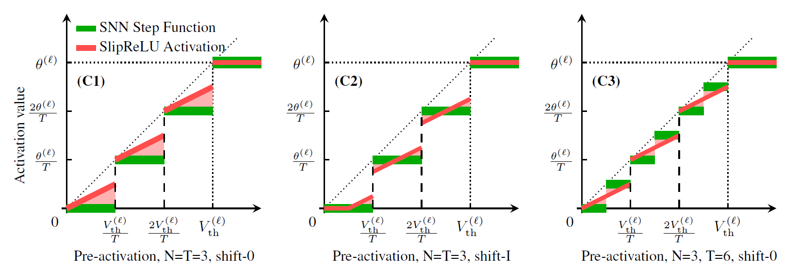
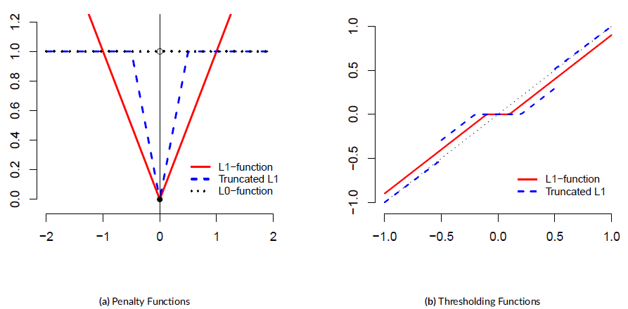
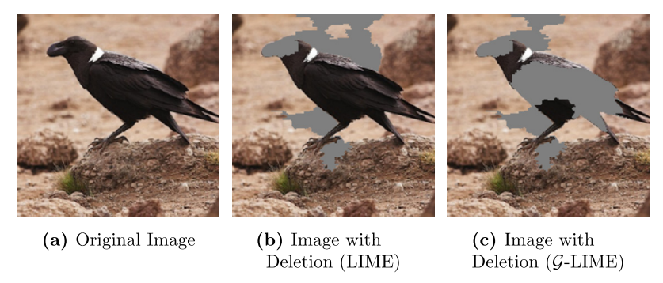
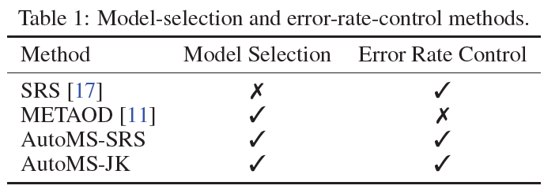
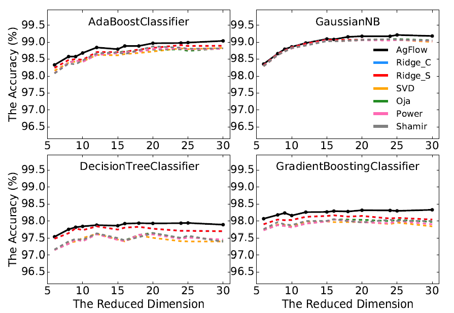

|
Haiyan Jiang, Ph.D.
Contact in China: Room 226, Fansun Building, No.94 Weijin Road, Nankai District, |
|
|
|
I am an Artificial Intelligence researcher with research interests in statistics and machine learning. I am currently a Postdoctoral Research Fellow in Machine Learning Department @ MBZUAI, working with Prof. Bin Gu and Prof. Huan Xiong, with a focus on energy-efficient AI and distributed computing, especially on Spiking Neural Networks (SNNs). Previously, from July 2020 to June 2022, I was a Senior Research Scientist in the Big Data Lab of Baidu Research (Beijing), Baidu Inc.. During this period, I collaborated with Dr. Haoyi Xiong and Prof. Dejing Dou on the project focused on Model Selection using Machine Learning and Optimization. I was a visiting researcher in Industrial Engineering and Decision Analytics @ HKUST from 2018 to 2019, hosted by Prof. Fugee TSUNG on the project of Outlier Detection in Mobile Phones. I received my Ph.D. in Statistics from the School of Statistics and Data Science of Nankai University in 2020, under the supervision of Prof. Changliang Zou and Prof. Zhaojun Wang, with a focus on change-point detection of time series data. I obtained my M.S. in Probability and Statistics from Lanzhou University, supervised by Prof. Jianzhou Wang, and my B.S. in Mathematics from Lanzhou University. Feel free to drop me an e-mail jianghaiyan.cn@gmail.com, if you are interested in our research and want to discuss relevant research topics or potential collaborations. |
|
Recently, I am mainly working on energy-efficient AI and distributed computing, with a focus on Spiking Neural Networks (SNNs) and their diverse applications. |
Ph.D. in Statistics
School of Statistics and Data Science, Nankai University, Tianjin, China.
Supervised by
Prof. Changliang Zou and
Prof. Zhaojun Wang.
M.S. in Probability and Statistics
School of Mathematic and Statistics, Lanzhou University, Lanzhou, China.
Supervised by Prof. Jianzhou Wang.
B.S. in Mathematics
School of Mathematic and Statistics, Lanzhou University, Lanzhou, China.
|  |
Haiyan Jiang, Srinivas Anumasa, Giulia De Masi, Huan Xiong, and Bin Gu. Proceedings of the 40th International Conference on Machine Learning (ICML) 2023 [pdf] [Code] |
|
|  |
Haiyan Jiang, Shanshan Qin, and Oscar Hernan Madrid Padilla. Stat, 12(1), 2023, e538. [Link] [Code] [arxiv] |
|
|  |
Xuhong Li, Haoyi Xiong, Xingjian Li, Xiao Zhang, Ji Liu, Haiyan Jiang, Zeyu Chen, and Dejing Dou Artificial Intelligence 314 (2023): 103823. [pdf] |
|
|  |
Yifan Zhang, Haiyan, Jiang#, Haojie Ren#, Changliang Zou, and Dejing Dou. (#Corresponding author) Advances in Neural Information Processing Systems (NeurIPS) 2022 [pdf] [Code] |
|
|  |
Haiyan Jiang, Haoyi Xiong, Dongrui Wu, Ji Liu, and Dejing Dou. Machine Learning 110(8), 2021, 2131-2150. European Conference on Machine Learning and Principles and Practice of Knowledge Discovery in Databases (ECML PKDD) 2021 [Link] [arxiv] |
|

|
Ji Liu, Tongtong Huang, Haoyi Xiong, Jizhou Huang, Jingbo Zhou, Haiyan Jiang, Guanhua Yang, Haifeng Wang, and Dejing Dou medRxiv, 2020-10. [Link] |
|

|
Haiyan Jiang, Jiaqi Li, and Zhonghua Li Stat 9(1), 2020, e284. [Link] |
Academic Services
-
Conference Reviewer / Program Committee Member: ICML 2021-2024, NeurIPS 2022-2023, ICLR 2021-2024
© 2023 Haiyan Jiang.